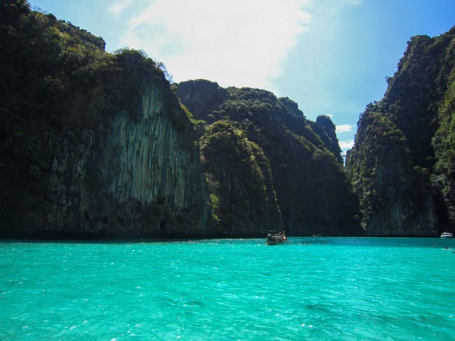

Come along on our unforgettable journey through Thailand!
I'm Rotem Dolin, a 26-year-old married woman blessed with a beautiful baby girl, navigating a career shift from marketing to QA. Here, I share the joy and adventure of our honeymoon, weaving together cherished memories and newfound passions. Let's explore Thailand together through my eyes and heart!
For years, Thailand has been a focal point for Israeli travelers and it remains deeply etched in their hearts; The abundance, the views, the activities, the shopping, the tastes, the beaches, the tropical nature and the pampering hotels at affordable prices and all this in 11 hours of flight. Yes, this is exactly what you need after the craziness of the wedding.
Here are 5 destinations that will make your experience magical:
- Bangkok:
The exciting capital of Thailand, a city that combines modernity and traditional Thai culture which is expressed in temples, markets, pubs, smells, shopping centers and how can I not mention a Thai massage twice a day.
In Bangkok you can visit the magnificent King's Palace, the Khawasan pedestrian mall, the water world, the floating market, coffee shops with special concepts and even enjoy traditional street performances when you can reach all of these by tuk tuk, which is also an experience in itself. - Phuket:
This is the largest island of Thailand and is considered one of the most popular islands among Israelis, it has plenty of attractions such as a rum making factory or the Big Buddha statue. With more than 30 amazing beaches, white sands and transparent turquoise waters, you can enjoy snorkeling and adventure sports, go on tours to the islands on ferries and be delighted by the sight of tropical vegetation and bays with lagoons.

- Koh Phi Phi Island:
The island is known for its views and turquoise waters and because it is very small, it is very easy to get around on foot or by boat taxi.The island is quiet, romantic and perfect for couples!
The famous 7 islands tour departs from Koh Phi Phi - a boat or speedboat that will take you to 7 amazing islands, the most special of which is Maya Bay, the place where the movie "The Beach" with Leonardo DiCaprio was filmed. You can also go up to the vantage point of the island and see the whole thing from above, go snorkeling, dive with coral reefs and starting in the evening you can also enjoy fire shows and beach parties. - Koh Tao Island:
A small island in the south of Thailand that is not visited by many, but if you ask me - it is a must visit!
The island is mainly known for its many diving clubs and the reason for this is clear - Koh Tao is considered one of the diving destinations with the most special and colorful underwater sights. Therefore, if you decided to come here, the sea is probably an integral part of what makes you happy. There is no noisy nightlife in Koh Tao and the place is more suitable for couples who want to enjoy lying on their backs on a stretch of white beach and wading in the water. - Krabi:
Krabi is renowned for its breathtaking natural attractions, including the stunning Railay Beach, accessible only by boat and famous for its limestone cliffs.
Krabi also boasts the picturesque Ao Nang Beach, the serene Tiger Cave Temple with panoramic views, and the enchanting Emerald Pool in Thung Teao Forest Natural Park. For adventure seekers, Krabi provides opportunities for rock climbing, kayaking, and exploring hidden lagoons and caves.